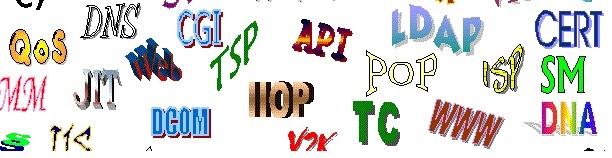

Странныебуквы

В современном русском языке не склоняются:
инициальные аббревиатуры (составленные из первых букв слов),
кончающиеся гласным, например:
МГУ,
ОАО;
заимствованные аббревиатуры, кончающиеся твердым согласным,
например: MAN;